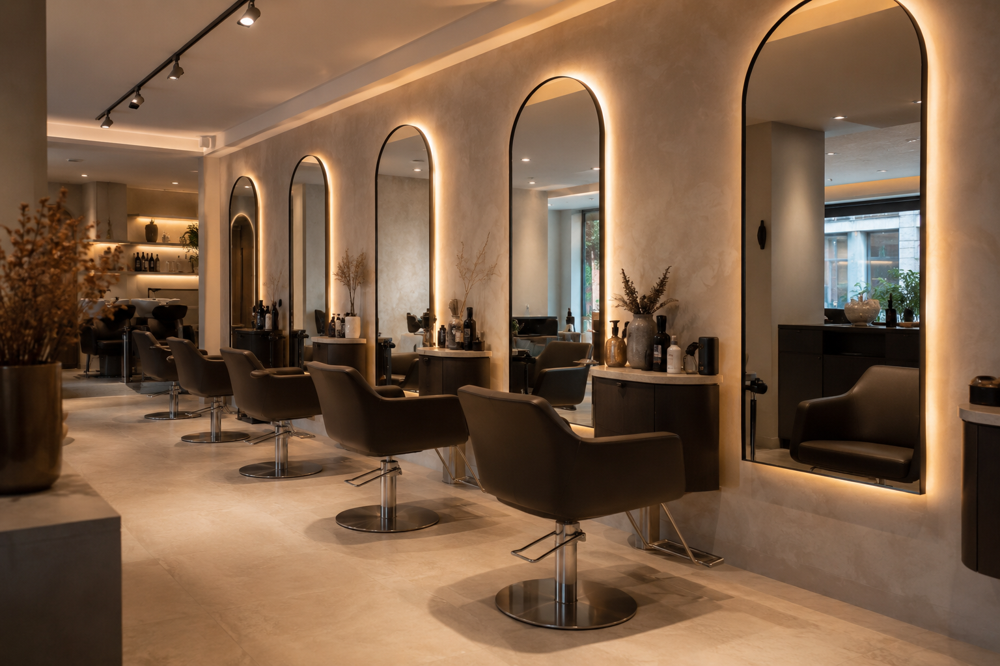

Kesim

Nişantaşı, İstanbul
Kesim, renk ve bakım; hepsi sakin, net ve kusursuz bir deneyimde.
Yoğun şehir temposunda iyi hissettiren bir mola. Kişiye özel saç tasarımı, doğal ton çalışmaları ve hızlı WhatsApp randevusu tek sayfada buluşuyor.
Bugünün akışı
- İlk randevu 09:00
- Yoğun saatler 12:00 - 18:30
- En çok alınan işlem Kesim + bakım + fön
Neden bu format satılır
Güzellik ve bakım işletmelerinde ilk izlenim doğrudan randevuya dönüşmeli.
01
Net konumlandırma
İlk ekranda salonun tarzı, hedef kitlesi ve hangi deneyimi sunduğu hemen anlaşılıyor.
02
Kolay uyarlama
Aynı yapı farklı kuaförler, nail studio, medikal estetik merkezi veya butik bakım stüdyosu için hızla uyarlanabilir.
03
Satış odaklı akış
Hizmetler, güven hissi, konum ve WhatsApp randevusu aynı sayfada sade bir akışla ilerliyor.
Mekânın hissi
Aceleye gelmeyen, iyi ışıklı, güven veren bir bakım deneyimi.
Bu demo, premium ama ulaşılabilir görünen yerel güzellik işletmeleri için hazırlandı. Gerçek mekân hissi, kısa ama ikna edici metinler ve hızlı randevu akışı ile satış görüşmelerinde güçlü durur.
4.9
ortalama müşteri puanı
35 dk
ortalama randevu süresi
7/7
randevu talebi alma akışı

Öne çıkanlar
En çok talep gören hizmetler.
Renk
Doğal geçişli boya ve tonlama
Sert bloklar yerine daha pahalı görünen yumuşak geçişler hedeflenir.Bakım
Onarıcı saç bakım protokolü
İşlem görmüş ve kurumuş saçlarda daha parlak, daha düzenli bir sonuç için.Stil
Etkinlik ve özel gün fön/styling
Çekim, davet ve akşam planları için hızlı ama kalıcı görünüm odaklı hizmet.“Bu tip bir sayfa, reklam bütçesi olmadan bile Instagram profili, Google işletme kaydı ve WhatsApp yönlendirmesiyle ilk randevu temasını ciddi biçimde güçlendirir.”
Ziyaret ve rezervasyon
Bir mesajla randevu, tek bakışta güven.
Adres
Valikonagı Caddesi 27, Nişantaşı
Saatler
Her gün 09:00 - 20:00
İletişim
+90 555 220 27 27
Bu demoda neler var
- Mobil uyumlu premium ana sayfa
- Hazır randevu ve iletişim CTA'ları
- Portfolyo sunumu için güçlü görsel yapı
- Güzellik, bakım ve klinik sektörüne çevrilebilecek içerik sistemi